My Computer History
2019
Looking back, there are many computers that shaped my life. Some of these I owned, some I used at school — some I simply lusted after. Maybe this will trigger some nostalgia for you. Maybe this will make you realize how much of a nerd I actually am. This is my computer history.
Apple II
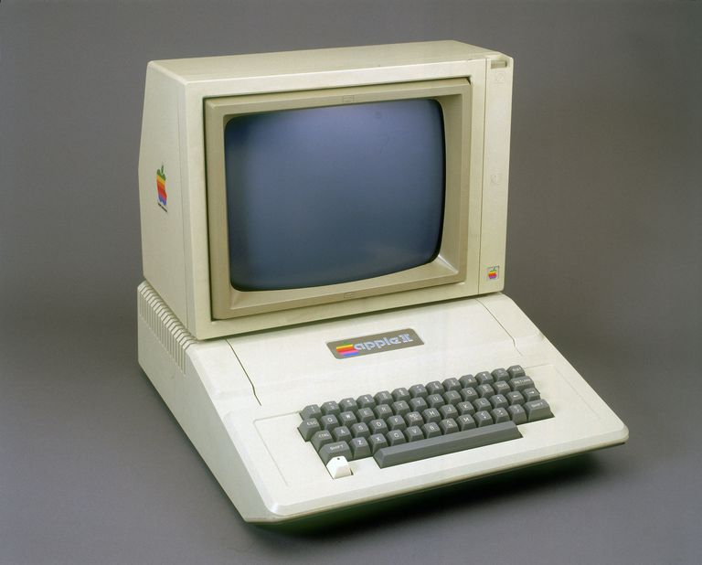
One of my earliest computer memories — like many I'm sure — is the Apple II. It was in the computer lab of Public School 26, Queens, NY. I have a hazy memory of a math game involving lily pads. What's amazing about the Apple II is how long it remained in use. One of my first jobs in junior high school was helping the local used-books store develop a catalog in BASIC, running on an ancient Apple II. In school, after typing class, we'd get to play Oregon Trail in a room with a handful of old Apple IIs.
Tandy Sensation

This was the first personal computer our family bought. We got it at Radio Shack. It booted into a custom app launcher called "Win Mate". I spent hours and hours clicking through the bundled CD-ROM that was basically a catalog of software for sale. This was also the first computer I did any 3D modeling on. At first I hit a roadblock: the 3D software wouldn't run because the Sensation lacked floating-point math capabilities. We ordered a math co-processor chip, and my dad and I installed it together. We were pretty proud of ourselves. I spent hours and hours rendering basic 3D scenes in a demo version of TrueSpace that came with the book, Becoming a Computer Animator. I used to trade floppy discs with friends, and fell in love with Civilization and the Police Quest series — all in glorious VGA graphics. At some point we installed a SoundBlaster card.
IBM PC
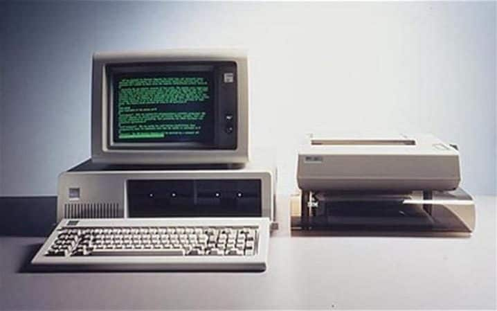
The computing workhorse of the 90s. My main memories of this machine are from school: DOS, touch-typing class, and Where in the World is Carmen Sandiego.
Macintosh
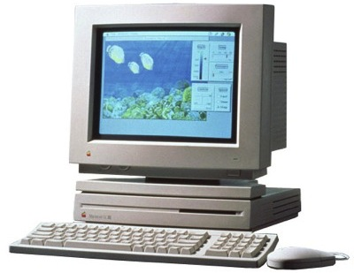
We never owned one in the 90s — they were too pricey for us. But we had them at school and I loved everything about them. They were beautiful, and they smelled nice. Mac OS was elegant. We used to play Sim Ant and print out color gradients from Mac Paint on Apple LaserWriters.
Amiga
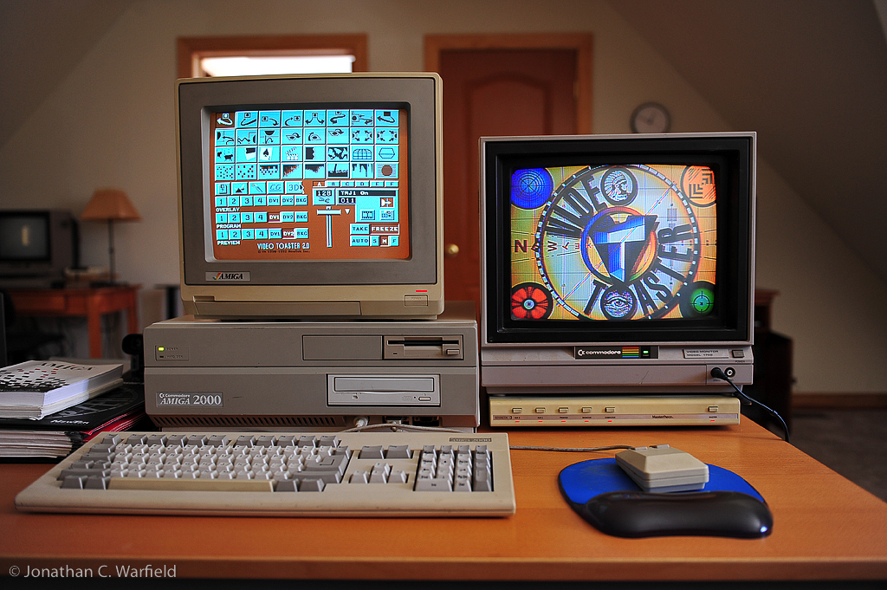
I was obsessed with the Amiga, but we never got to own one. The company was going under right around the time we were looking to buy. We drove all the way to Manhattan to B&H (one of the few Amiga resellers) and they told us to forget it. This was the computer on which the Video Toaster was built. The Toaster brought TV production capabilities to the Amiga, and shows like Babylon 5 and Star Trek: The Next Generation used Lightwave 3D (which was bundled with the Toaster) to render their special effects. You could get an Amiga and Toaster for under ten thousand dollars at a time when most TV production tools ran in the millions of dollars. It was a hallmark of public access programs everywhere — as featured in Wayne's World. (Fun fact: Dana Carvey's brother was one of the founders of NewTek, creators of the Toaster.) The culture around the Amiga was influential on me; I subscribed to Amiga World and Video Toaster User, learning a ton about video and 3D production before ever laying my hands on the software.
SGI Onyx
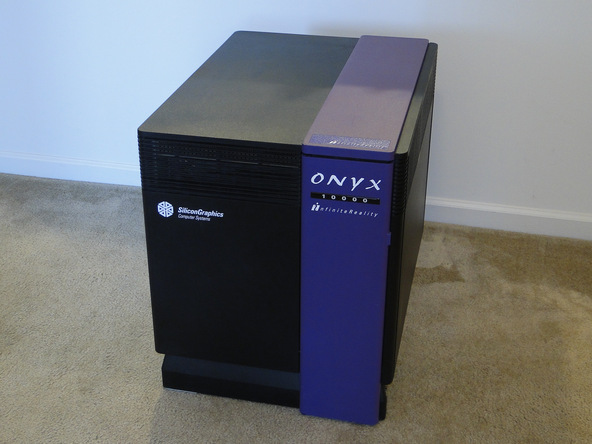
I first spotted this machine in the TV documentary, The Making of Jurassic Park. Industrial Light and Magic (ILM) had entire rooms full of these incredibly expensive machines. I first saw one in real life at a computer faire my family went to when I was still in Junior High. (We had gone because we heard someone would be showing off a Video Toaster.) There were a pair of gentlemen promoting their architectural visualization services on the SGI Onyx. It was the size of a small refrigerator, and very loud. The graphics were mind-blowing for the time, but today could be best compared to the first release of Virtua Fighter. This was my first insight that there existed a world of computers far more powerful (and sexy) than the ones we had access to.
SGI Indy
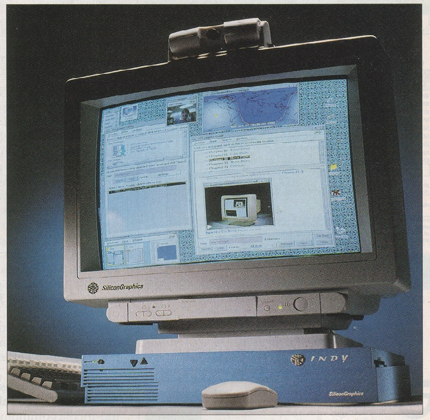
After seeing the Onyx, my mom helped me write to SGI and request product literature. They sent back some beautiful printed material on the Indigo 2 (which I was familiar with from the Jurassic Park documentary) and a new machine called the Indy. The Indy was SGI's 'affordable', entry-level machine. It had exotic graphics capabilities compared to just about any PC, as well as ethernet, and a webcam (!). The webcam was so futuristic at the time; I'd never seen anything like it. I pressured my mom and dad that we needed to buy this computer — more expensive than any car we'd ever owned — so that I could really learn 3D graphics and animation. At the time, the big three software packages (SoftImage, Wavefront, Alias PowerAnimator) all cost tens of thousands of dollars. My mom called a visual effects studio to ask their opinion. The man on the other end of the line yelled at my mom and told her that anyone thinking of buying an SGI for their kid was insane.
Dell (Pentium)
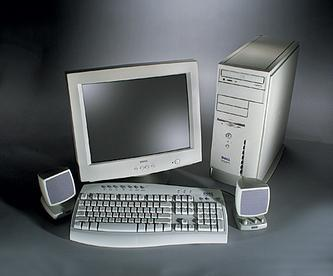
The 90s were a cool time in computing because Moore's Law was visceral. The jump to Pentium was dramatic. (The next time I'd feel such a distinct increase in speed would be switching to a solid state hard drive some twenty years later.) I gave up the dream of the SGI, accepted the demise of the Amiga, and we finally upgraded our trusty old Sensation to a Dell, that we ordered out of a printed catalog. My mom had filled an entire notebook with different configurations from different computer makers, and Dell came out on top. This machine supercharged my creativity. I could run real 3D software, and create actual animations. I could also play some fun games. MYST stands out. I can picture sitting in my room, ten foot snow drifts outside, dog asleep on the bed, wandering around the islands of MYST, utterly entranced.
Original iMac and G4 Towers
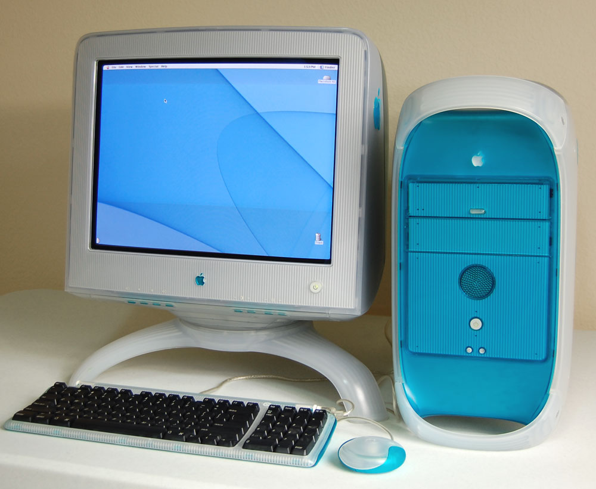
One day the Bard computer science labs bought all new computers. Blue, candy colored iMacs and matching G3 towers. OS X came out around the same time. This was the height of Apple's "It Just Works" era. Everything was simple. Networking and the internet were a breeze. They were great machines for editing video, and iTunes exploded in popularity around campus. I accessed Google for the first time on one of those machines.
Titanium PowerBook
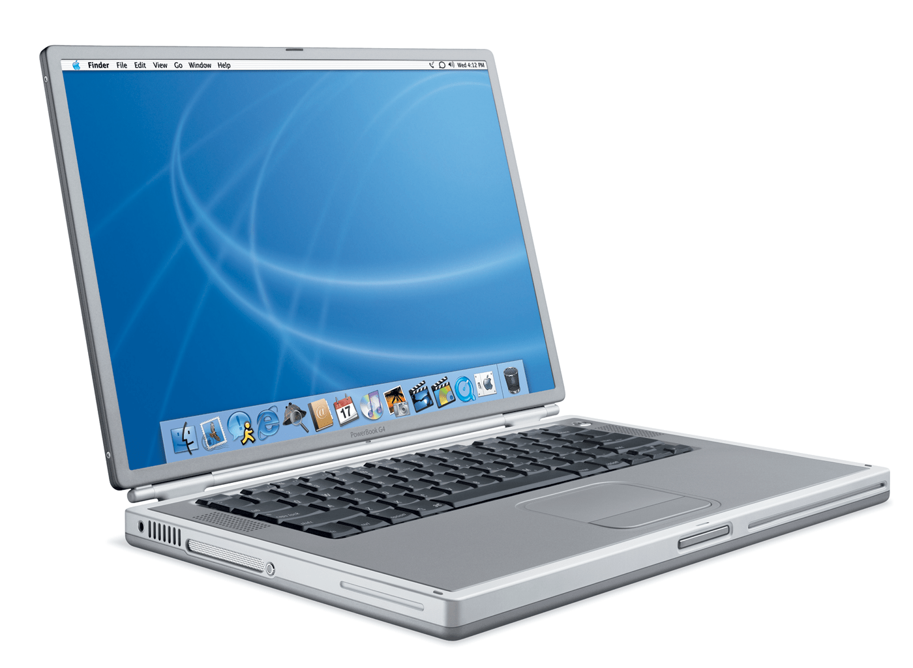
Billed as a 'supercomputer to go', the Titanium PowerBook was the first laptop with gigaflop speed. I relied on that machine through college and beyond. It was my first mobile computer, and it was liberating to be able to do high-end work wherever I traveled. I've used Apple laptops ever since. They've gotten better and better, but at a certain point lost their excitement. Maybe it's their ubiquity. That original Titanium was exciting though.
iMac
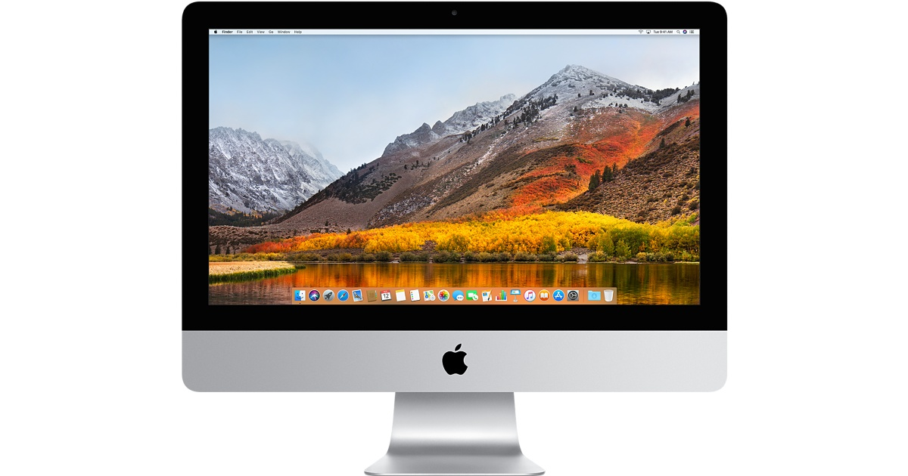
I love my iMac. It's been my home computer (in various iterations) since around 2009. I made Polychord on an iMac. It's fast, clean, and reliable. The only 'problem' is there's no pressing reason to upgrade it. It works!
MacBook
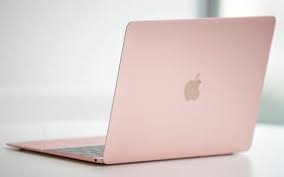
I recently bought a MacBook as a secondary family home computer. It's rose gold, and it's one of the nicest laptops I've ever used. For a non 'pro' model, it's incredibly swift. And light. It's great to have a portable family computer — I tend to monopolize the iMac, and it's nice to be able to do some work at the kitchen table, or on a couch. It's the first laptop in I don't know how long that I love using.
iPhone and iPad
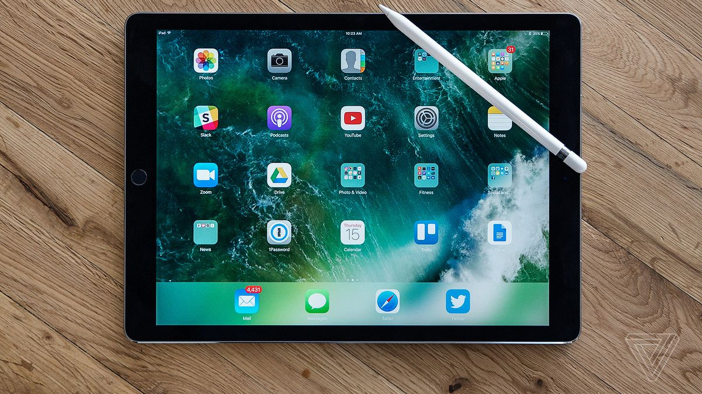
My early era of computing largely ended with my Titanium Powerbook. After that, things were more of the same until I got my first flatscreen iMac in 2009. The iMac (and the MacBook we got recently) were the last computers I got excited about. The biggest shift, post early 2000s, was mobile. The iPhone was, obviously, a big moment. I bought the first one, and loved it. But I'm not really that excited by phones anymore. They work. The camera is the main draw for me — any huge improvements there will typically get me to shell out money for an upgrade. The iPad though — that was even more important in my own computer history. My wife (who was my girlfriend at the time) bought me the first generation iPad, so I could develop Polychord on it. I think tablets are great. Each iPad has been a steady improvement — suddenly we're living in the future, video chatting on a tablet like they did in Star Trek. The iPad Pro (with the Apple Pencil) is probably the most seismic event in the past ten years for me, in terms of computing. My productivity as an artist and designer increased 10X almost instantly. Being able to draw or paint at any time of day, wherever I am, in any color, any style — it's truly incredible. I've rediscovered drawing — something I lost for a long time when the laptop dominated my creative toolkit.
The Future
Looking back, I feel the passing of an era. The 90s were a great time for personal computing. Every eighteen months the earth shook with some hot new machine, full of promise. Those machines shaped my life and my career. But I no longer feel a burning excitement for the next upgrade. (Yes, a borderline heretical statement coming from a technologist.) However, there are new avenues opening up. Entire countries are coming online for the first time, and they're growing up mobile first. Software is getting interesting. I hope you've enjoyed walking with me through my nerdy and sometimes obscure computer history.